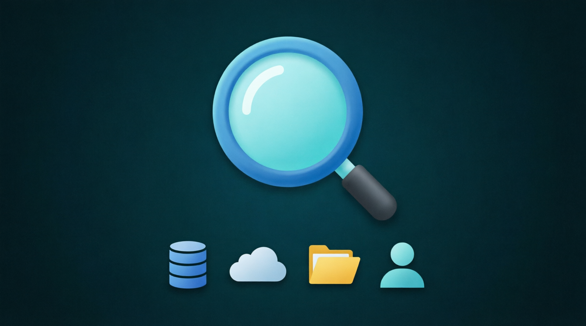
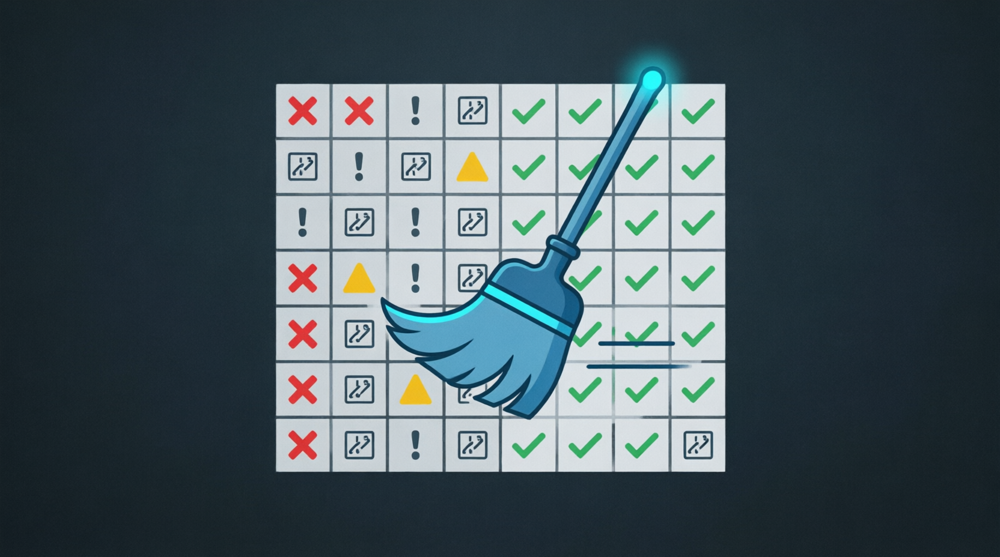
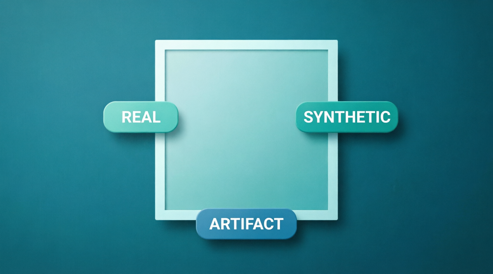
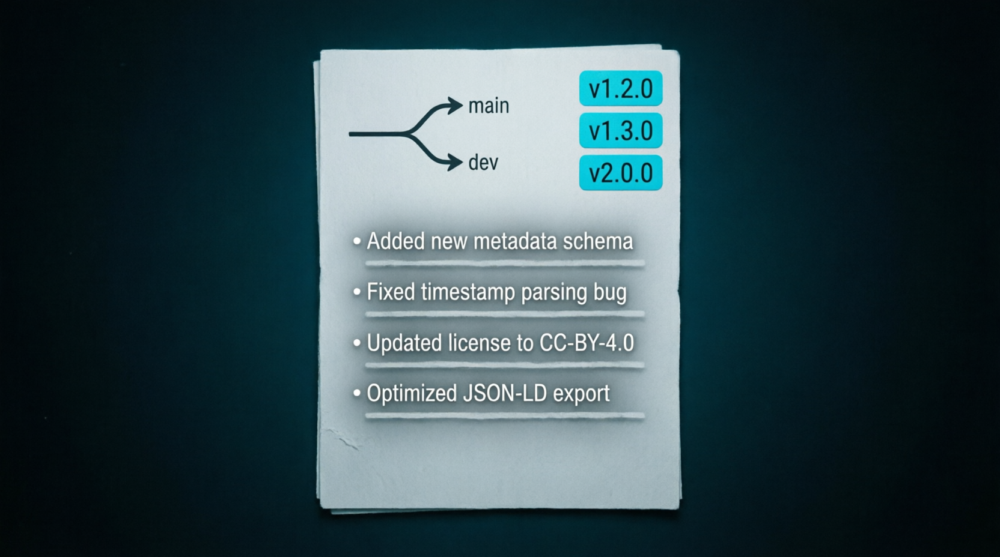

anti-ai-qwen-academy • Data Curator
Library Data Hub • 100% Offline • 10 days • Ethical Data Management

🔍
🧹
🏷️
📦🏆 CERTIFICATE REQUIREMENTS
Data Curation + Qwen formats
No mistakes
5 cases in Qwen formats
⚠️ Perfect results → Library Contributor access
📊 Progress
⚠️ All data will be deleted
🛠️ Data Curator Toolkit
Interactive tools for ethical data curation practice
🗂️ Dataset Builder
Create mini-datasets with quality parameters
🏷️ Annotation Simulator
Practice labeling images with metadata
⚖️ Bias Detector
Visualize demographic biases in your dataset
📋 Metadata Generator
Generate catalog record for your dataset
📚 Data Curator Specialist Library
Role documentation, ethics, workflows, resources
🗂️ Data Curator
Guardian of data quality, ethics, and accessibility throughout the data lifecycle
🔑 Key Mission
Prepare clean, ethically balanced, and legally compliant datasets for training AI verification specialists in offline mode.
🧩 Responsibilities
- Source identification: open datasets, user content, synthetic data
- Cleaning and validation: remove duplicates, fix errors, detect artifacts
- Annotation and metadata: label media with structured metadata
- Bias detection and correction: ensure representative sampling
🛠️ Tools
Label Studio (local), CVAT, SQLite, OpenCV, ExifTool, Obsidian for documentation, Great Expectations for QC.
📊 KPIs
- 95%+ data quality score after cleaning
- 0 critical ethical violations in curated datasets
- 100% metadata completeness for cataloged datasets
- Reproducibility: all datasets versioned and documented
🎯 Why libraries need Data Curators
Libraries are becoming data hubs for AI literacy. Data Curators ensure datasets are clean, ethical, legally compliant, and educationally valuable — not just collected.
🔍 Data Sourcing
Identifying relevant, legally clean sources for educational datasets
qwen_data_source_record.md🧹 Quality Control
Cleaning, validating, and documenting dataset quality metrics
qwen_quality_report.json⚖️ Ethics Review
Detecting and correcting demographic, cultural, geographic biases
qwen_bias_audit.csv🔐 Access Management
Setting permissions, encryption, compliance with 152-ФЗ/GDPR
qwen_access_config.yaml📦 Documentation
Versioning, methodology description, reproducibility guarantees
qwen_dataset_catalog.json🛠️ Graduate Skills
🔹 Hard Skills
- Basic Python/SQL for data manipulation
- Understanding data formats: JSON, CSV, TFRecord, EXIF
- Annotation tools: Label Studio, CVAT, Prodigy
- Visual analysis: compression artifacts, blinking detection, lighting inconsistencies
- TensorFlow Lite for offline inference of detection models
🔹 Soft Skills
- Attention to detail and critical thinking
- Understanding ethical aspects of personal data handling
- Communication with engineers, methodologists, lawyers
- Ability to explain technical nuances to non-technical audiences
- Compliance mindset: 152-ФЗ, GDPR, Tongyi AI Principles
💼 Where do Data Curators work?
Formats: Volunteer • Internship • Grant-funded • Part-time
📈 Path to Data Curator Specialist
- Days 1-3: Role intro, data sourcing, cleaning fundamentals
- Days 4-6: Annotation, bias detection, security basics
- Days 7-8: Documentation, quality control, versioning
- Day 9: Portfolio in Qwen-compatible formats
- Day 10: FINAL EXAM (10/10)
📦 Qwen Data Curator Reporting Formats
🤝 SUPPORT THE PROJECT 💙
App is free. Always will be.
Support development: